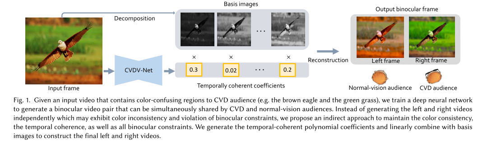

| SIGGRAPHASIA2019 | |
|
Colorblind-Shareable Videos by Synthesizing Temporal-Coherent Polynomial Coefficients |
|
|
| |
|
ACM Transactions on Graphics (SIGGRAPH Asia 2019 issue), Vol. 38, No. 6, November 2019, pp. 174:1-174:12. |
|
|
 |
|
Abstract
To share the same visual content between color vision defi ciencies (CVD)
and normal-vision people, attempts have been made to allocate the two
visual experiences of a binocular display (wearing and not wearing glasses)
to CVD and normal-vision audiences. However, existing approaches only
work for still images. Although state-of-the-art temporal filtering techniques
can be applied to smooth the per-frame generated content, they may fail to
maintain the multiple binocular constraints needed in our applications, and
even worse, sometimes introduce color inconsistency (same color regions
map to diff erent colors). In this paper, we propose to train a neural network
to predict the temporal coherent polynomial coefficients in the domain
of global color decomposition. This indirect formulation solves the color
inconsistency problem. Our key challenge is to design a neural network to
predict the temporal coherent coefficients, while maintaining all required
binocular constraints. Our method is evaluated on various videos and all
metrics confirm that it outperforms all existing solutions.
|
Paper (PDF, 29.0M) |
|||
|
BibTex:
|